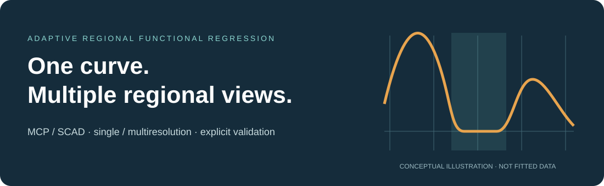

Documentation · Get started · Reference
Smooth effects. Meaningful regions.

R + RcppArmadillo · scalar-on-function regression · explicit validation
AdaReFun is short for Adaptive Regional Functional Regression. It provides adaptive regional sparsity methods for scalar-on-function linear regression and contains the established fixed-resolution fMCP() and fSCAD() estimators together with the proposed adaptive regional framework:
- ASR-MCP and ASR-SCAD: adaptive single-resolution regional penalties;
- AMR-MCP and AMR-SCAD: adaptive multi-resolution regional penalties;
-
arfc(): one specified ASR/AMR and MCP/SCAD fit, with training BIC over its supplied tuning path; -
arfc_select(): independent-validation selection of exactly one of those four fits.
ARFC is the adaptive regional folded-concave estimator family. ARFC-Select chooses one of its four members by validation MSE. The package also provides fixed-resolution fMCP() and fSCAD() fits.
The model is
where each response is paired with a curve on the common argument domain, is the intercept, is the coefficient function, and is the residual error. The coefficient uses a common B-spline representation. The regional penalty uses normalized regional norms and domain-mass multipliers. In the multi-resolution fit, nested regions share the same coefficient vector and level weights sum to one.
Matrix-intensive integration, regional Gram construction, norm evaluation, local quadratic approximation, tuning-path fitting, active-set refitting, effective degrees of freedom, and BIC calculations are implemented in C++17 with RcppArmadillo.
Authors and citation
Developed by Bahadır Yüzbaşı and Jiguo Cao. Use citation("AdaReFun") to cite the package.
Repository: byuzbasi/AdaReFun. See the getting-started guide, method guide, result gallery, and reproduction guide.
Installation
Install from GitHub with R 4.1 or later and a working C++17 compiler:
# Install remotes first if it is not already available.
# install.packages("remotes")
remotes::install_github("byuzbasi/AdaReFun", build_vignettes = FALSE)Analysis scripts
The replication code contains the simulation and real-data run scripts. See the run guide for setup and commands.
Simulation results

The inset shows coefficient recovery inside the true-null interval in Case II. The result gallery also shows exact-zero selection frequencies and the real-data analyses.
Direct ARFC fit
library(AdaReFun)
set.seed(2026)
n <- 60
argvals <- seq(0, 1, length.out = 51)
x <- matrix(rnorm(n * length(argvals)), n)
beta <- ifelse(argvals >= 0.35 & argvals <= 0.65, 0,
1.5 * sin(2 * pi * argvals))
weights <- c(0.01, rep(0.02, 49), 0.01)
y <- 0.5 + as.numeric(x %*% (weights * beta)) + rnorm(n, sd = 0.15)
fit <- arfc(
y, x, argvals,
lambda = 10^seq(-4, -1, length.out = 8),
kappa = 10^seq(-6, -3, length.out = 5),
resolution = "multi",
penalty = "MCP",
levels = c(8L, 16L, 32L)
)
summary(fit)
plot(fit, type = "coefficient")
plot(fit, type = "weights")
predict(fit, x[1:5, , drop = FALSE])ARFC-Select with an explicit validation sample
selection <- arfc_select(
y[1:40], x[1:40, , drop = FALSE], argvals,
validation = list(
y = y[41:60],
x = x[41:60, , drop = FALSE]
),
lambda = 10^seq(-4, -1, length.out = 8),
kappa = 10^seq(-6, -3, length.out = 5),
levels = c(8L, 16L, 32L)
)
selection$selection
plot(selection, type = "validation")
plot(selection, type = "candidates")arfc_select() fits candidates on the training data and uses the supplied validation sample to choose the returned model.
Fitting notes
Supply tuning grids through lambda and kappa. The package centers predictors and responses and requires complete, finite inputs. Simpson integration uses an equally spaced grid with an odd number of points; choose trapezoid integration for an irregular grid. The tuning table reports convergence and fit diagnostics. Default shapes are MCP gamma = 2.7 and SCAD a = 3.7, which have equal scalar maximum concavity.
References
- Fan, J., and Li, R. (2001). Variable selection via nonconcave penalized likelihood and its oracle properties. Journal of the American Statistical Association, 96(456), 1348-1360.
- Zhang, C.-H. (2010). Nearly unbiased variable selection under minimax concave penalty. The Annals of Statistics, 38(2), 894-942.
- Lin, Z., Cao, J., Wang, L., and Wang, H. (2017). Locally sparse estimator for functional linear regression models. Journal of Computational and Graphical Statistics, 26(2), 306-318.